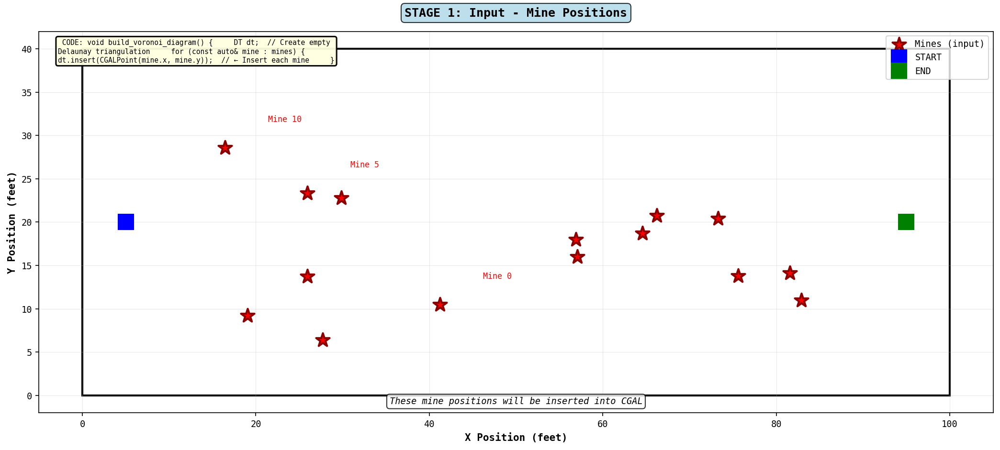

Stage 1: Input Data

What's happening: We start with mine positions (red stars) and start/end points. These mine positions will be inserted into CGAL's Delaunay triangulation algorithm.
📄 C++ Code (from enhanced file)
void build_voronoi_diagram() {
DT dt; // Create empty Delaunay triangulation
for (const auto& mine : mines) {
dt.insert(CGALPoint(mine.x, mine.y)); // ← Insert each mine
}
// CGAL automatically creates the triangulation
// as we insert points. This is the foundation
// for our Voronoi diagram!
}